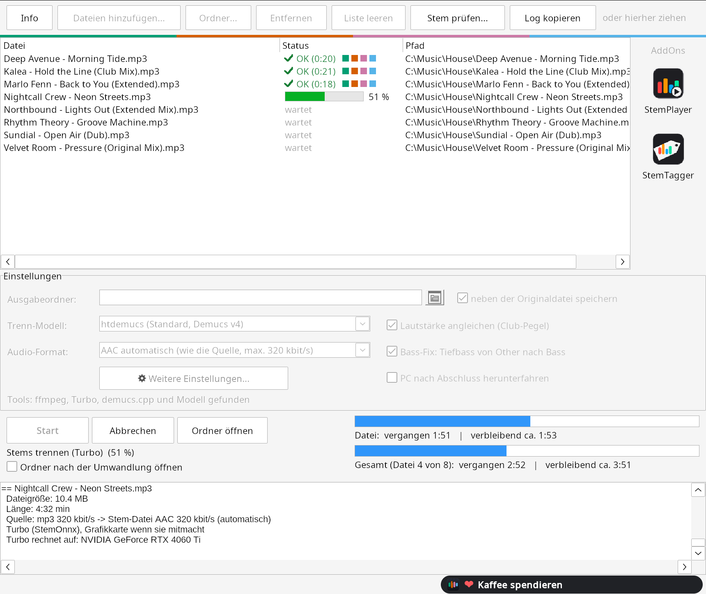
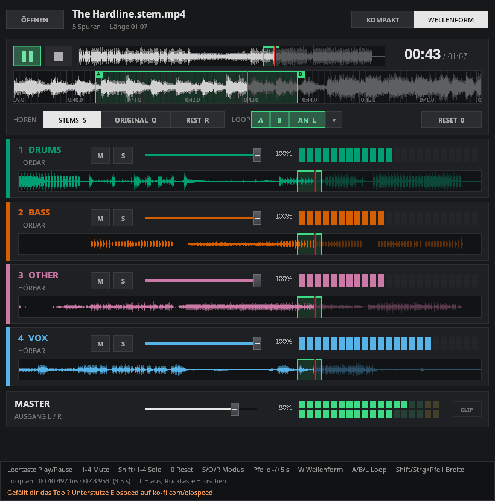
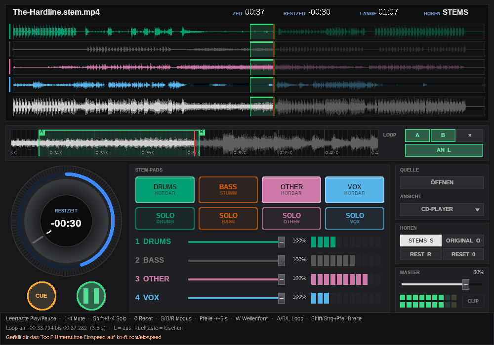
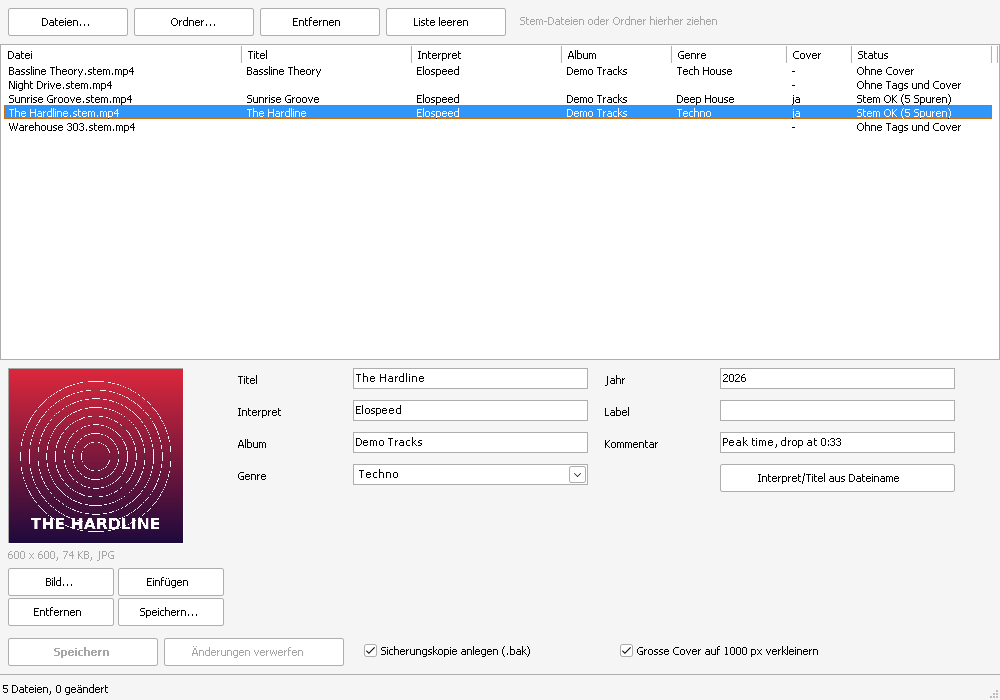
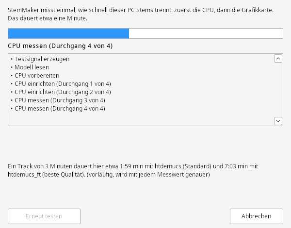

Aus deinen MP3s werden
Traktor Stems
StemMaker zerlegt einen Track in Drums, Bass, Melodie und Gesang und speichert ihn als fertige .stem.mp4 für Traktor. Ein kleines Windows-Programm, kostenlos und Open Source: kein Python, kein PyTorch, keine Grafiktreiber, nichts einzurichten. Die Turbo-Engine trennt einen Song auf einem normalen PC in etwa einer Minute, mit Grafikkarte in Sekunden. Neu in 2.1: der StemTagger für Titel, Interpret und Cover deiner Stem-Dateien.
- Kostenlos, MIT-Lizenz
- Windows 10 / 11
- Kein Python, Grafikkarte optional
- Läuft lokal auf deinem PC
- Ganze Ordner auf einmal
- Bis 320 kbit/s

So sieht es aus
Von der Musikdatei zur Traktor-Stem-Datei und danach Probehören im StemPlayer mit Wellenform für jeden Stem: Springen, Stumm, Solo, A/B mit dem Original und Fader. Ton an!
Alles drin, kein Python zu installieren
Installieren oder entpacken, starten, Musik reinziehen. Beim ersten Start lädt StemMaker ffmpeg und das Trennmodell selbst herunter.
Vier echte Stems
Drums, Bass, Other (Melodie) und Vox, dazu das Original als Master-Spur, genau im Format, das Traktor erwartet. Namen und Farben sind einstellbar.
Qualität wie Traktor
Nutzt das Open-Source-Modell Demucs v4 (htdemucs). Im direkten Vergleich mit einer Stem-Datei aus Traktor Pro 4 waren Drums, Gesang und Pegel praktisch gleich. Drei Modelle zur Wahl: htdemucs_ft für die beste Qualität und das ältere Demucs v3.
Für ganze Sammlungen gebaut
Ganze Ordner hinzufügen, vor dem Start die geschätzte Dauer sehen und über Nacht laufen lassen. In der Liste zeigt ein Balken den Fortschritt der laufenden Datei, fertige Dateien bekommen ein Häkchen und vier Farbpunkte. Die Liste wird nach jeder Datei gespeichert: Ein Absturz oder Stromausfall kostet einen Track, nicht den ganzen Lauf. In unserem eigenen Belastungstest kamen 400 Dateien in verschachtelten Ordnern vollständig durch, auch nach Abbrüchen und hart beendetem Programm, mit 1:1 nachgebautem Ordnerbaum.
Tags und Cover bleiben
Titel, Interpret, Album, Genre, Jahr, Tracknummer, BPM, Tonart, Label und Cover werden aus der MP3 übernommen. So sieht die Stem-Datei in deiner Traktor-Collection richtig aus.
Nativ statt Python-Installation
Die Trennung läuft nativ mit ONNX Runtime (Turbo) oder demucs.cpp statt über Python und PyTorch. Kein Python, kein CUDA und keine Treiber zu installieren, nichts im Hintergrund, kein Konto, keine Cloud. Startet in einer Sekunde, und deine Musik verlässt den PC nie.
Club-Pegel und Bass-Fix
Leise Dateien werden ohne Limiter auf Club-Pegel angehoben, damit die Wellenformen gut lesbar sind und ein Stem im Set nicht plötzlich im Pegel abfällt. Tiefbass, den das Modell im Melodie-Stem lässt, wandert in den Bass-Stem, so wie bei Traktor. Kick und Bass bleiben dadurch satt.
Passt sich deinem PC an
Prüft beim ersten Start, ob deine Grafikkarte hilft, und nimmt sie nur, wenn sie richtig und schneller rechnet, sonst rechnet der Prozessor. Hält den PC bei langen Läufen wach und fährt ihn am Ende auf Wunsch herunter.
Deutsch, Englisch und Spanisch
StemMaker und der StemPlayer sprechen Deutsch, English und Español, ausgewählt beim ersten Start. Ein besonderer Dank geht an David GJ für die spanische Übersetzung! Alle Helfer stehen unter „Info“ im Reiter „Danke“.
So geht's
In drei Schritten von deiner Musikdatei zur Stem-Datei für Traktor.
- Herunterladen und installierenDen Installer (
StemMaker-<Version>-Setup.exe) von GitHub laden, er legt einen Startmenü-Eintrag an. Oder die portable ZIP-Version irgendwohin entpacken, zum Beispiel nachC:\Tools\StemMaker. Keine Administratorrechte nötig. - Musik reinziehenMP3-, WAV-, FLAC-, AIFF-, M4A-, AAC-, OGG- oder Opus-Dateien oder ganze Ordner ins Fenster ziehen und auf Start klicken.
- In Traktor ladenAus jedem Track wird
Titel.stem.mp4, neben dem Original oder in einem Ordner deiner Wahl. In ein Stem-Deck laden und loslegen.
Was du alles nicht machen musst
Die meisten Stem-Trenner sind Kommandozeilen-Werkzeuge. Das Schwierigste ist meist, sie überhaupt zum Laufen zu bringen, und am Ende liegen vier einzelne Dateien da.
- Keine Python-Umgebung, kein PyTorch, keine CUDA-Treiber und keine Versionskonflikte
- Keine Grafikkarte nötig: Turbo läuft auf dem Prozessor jedes 64-Bit-Windows-PCs und nimmt eine Grafikkarte nur dazu, wenn sie hilft
- Kein Routing von Hand: Die vier Stems und das Original landen in einer
.stem.mp4, fertig für das Stem-Deck - Keine Zusatzsoftware für den Traktor-Container und keine Traktor-Lizenz zum Umwandeln
- Kein Klicken Track für Track: Ordner auswählen und später wiederkommen
- Kein Testimport: Der mitgelieferte StemPlayer zeigt dir, ob die Trennung gelungen ist
Erst reinhören, dann auflegen
Mit dem mitgelieferten StemPlayer prüfst du eine fertige Stem-Datei, ohne sie vorher in Traktor zu importieren.
- Wellenform für jeden Stem in seiner Farbe, ein Klick springt an die Stelle (oder umschalten auf die kompakte Ansicht)
- Stumm, Solo und Lautstärke für jeden Stem, mit Pegelanzeige. Solo wie am DJ-Mixer, mit Strg auch mehrere
- A/B-Vergleich mit dem Original
- Loop A-B: Anfang und Ende mit den Tasten A und B oder per Knopf setzen, oder mit der rechten Maustaste über eine Wellenform ziehen. Die Schleife läuft ohne Lücke, Mute und Solo funktionieren weiter
- Lupe unter der Wellenform: ein vergrösserter Ausschnitt rund um die aktuelle Stelle mit Zeitraster, darin lassen sich A und B auf die Millisekunde genau setzen und verschieben
- Scrubbing: Zieht man die Welle in der Lupe, klingt der Ton wie eine Schallplatte unter der Hand, auch rückwärts
- Modus „Rest“ zeigt, was bei der Trennung verloren ging
- Öffnet per Drag & Drop oder direkt aus StemMaker

StemTagger und CD-Player
Ein neues AddOn für deine Tags und ein neues Gesicht für den StemPlayer. Du nutzt StemMaker schon? Das eingebaute Update bringt dir Version 2.1.1 mit einem Klick. 2.1.1 korrigiert die Fenster aller Programme bei 125 bis 200 % Anzeigeskalierung.
StemPlayer 1.8 im CD-Player-Design
- Eine neue Ansicht wie am DJ-Pult: grosses Jogwheel mit Restzeit, CUE- und Play-Taste, ein Stem-Pad pro Stem für Stumm und Solo, Kanalregler und Pegelanzeigen
- Oben im Display alle Wellenformen; Loop A-B und Lupe funktionieren wie gewohnt
- Mit einem Klick zwischen Kompakt, Wellenform und CD-Player wechseln; der StemPlayer merkt sich deine Wahl

StemTagger 1.0: Titel, Interpret und Cover für Stem-Dateien
- Ein neues AddOn für Stem-Dateien (
.stem.mp4): Es setzt Titel, Interpret, Album, Genre, Jahr, Label, Kommentar und Cover, also genau das, was Traktor und Mixxx anzeigen und wonach du dort suchst - Ideal für Stem-Dateien ganz ohne Tags: Die Liste zeigt sofort, welchen Tracks Tags oder Cover fehlen
- Viele Dateien auf einmal: Ordner laden, mehrere Tracks markieren und Album oder Cover für alle gleichzeitig setzen. Ein Cover fügst du mit Strg+V ein oder ziehst es einfach aufs Fenster
- Die Stems bleiben unangetastet: Neu geschrieben werden nur die Tags. Audio und die vier Stems bleiben bytegenau gleich. Getestet mit Traktor Pro 4 und Mixxx 2.6 Beta
- Startet direkt aus der neuen AddOn-Leiste in StemMaker, gleich neben der Dateiliste, oder per Rechtsklick „Tags bearbeiten...“
- Brauchst du nur den StemTagger? Es gibt ihn auch einzeln als kleines ZIP auf der Release-Seite

Turbo: ein Vielfaches schneller
Die grösste Änderung seit dem ersten Release: eine neue Trenn-Engine, die ein Vielfaches schneller ist.
Turbo-Engine
- Auf der CPU etwa 6- bis 10-mal schneller als bisher, mit dem gleichen Modell (htdemucs) und gleicher Qualität: Die Stems sind nachgemessen praktisch identisch
- Grafikkarte automatisch (Beta): NVIDIA, AMD und Intel über DirectML, ohne Zusatz-Installation. StemMaker probiert die Karte zuerst an einem Stück Musik aus und nimmt sie nur, wenn sie richtig und schneller rechnet, sonst rechnet die CPU
- Weiterhin kein Python, kein CUDA, kein Konto, alles läuft auf deinem PC
Vortest beim ersten Start
Ein kleines Fenster misst mit Fortschrittsbalken CPU und Grafikkarte und sagt am Ende, wie lange ein 3-Minuten-Track auf deinem PC dauert.
Klassisch als Rückfall
Die bewährte Engine demucs.cpp lässt sich in den Einstellungen wählen und springt automatisch ein, falls Turbo bei einer Datei scheitert. Die Liste läuft weiter. Lange DJ-Mixe brauchen mit Turbo zudem wenig Arbeitsspeicher.

So viel schneller: ein Track von 4 Minuten
Reine Trennzeit mit htdemucs (Standard), gemessen auf unseren eigenen PCs. Das Verpacken in die Stem-Datei kommt dazu (wenige Sekunden pro Songminute). htdemucs_ft (beste Qualität) braucht etwa drei- bis viermal so lang. Wie schnell es auf deinem PC geht, zeigt der Vortest, und StemMaker lernt das Tempo und zeigt, wie lange die Liste dauert.
Fragen und Antworten
Ist StemMaker wirklich kostenlos?
Ja. StemMaker ist Open Source unter der MIT-Lizenz. Keine Werbung, kein Konto, keine Bezahlversion. Wenn er dir gefällt, freut sich Elospeed über eine freiwillige Spende auf Ko-fi.
In welchen DJ-Programmen laufen die Stem-Dateien?
Die Dateien folgen dem offenen NI-Stem-Format (MP4 mit Master, vier Stems und Stem-Metadaten), genau wie bei Stemgen. Gesichert sind:
- Traktor Pro 4: selbst getestet, die vier Stems laufen in den Stem Decks.
- Mixxx 2.6 (zurzeit Beta): selbst getestet, die Dateien laden als Stems mit vier Stem-Reglern, Namen, Farben und farbiger Stem-Wellenform. Die stabile Mixxx 2.5 kann noch keine Stems.
Andere Programme, die .stem.mp4 lesen, sollten ebenfalls funktionieren.
Brauche ich eine Grafikkarte oder Python?
Nein. StemMaker bringt seine Trenn-Engine mit (ONNX Runtime, dazu demucs.cpp als Rückfall). Es gibt also keine Python-Umgebung, kein PyTorch und keinen CUDA-Treiber zu installieren und nichts, was sich mit anderer Software auf deinem PC in die Haare kriegt. Auf dem Prozessor geht es schon schnell. Hast du eine Grafikkarte (NVIDIA, AMD oder Intel), testet StemMaker sie beim ersten Start und nimmt sie nur, wenn sie richtig und schneller rechnet; dieser Teil ist noch Beta. Nötig sind Windows 10 oder 11 (64 Bit) und beim ersten Start eine Internetverbindung für die Downloads (ffmpeg ca. 56 MB, Modell 81 MB).
Windows zeigt „Der Computer wurde durch Windows geschützt“. Ist das schlimm?
StemMaker ist nicht digital signiert, weil Zertifikate jedes Jahr Geld kosten. Klick auf „Weitere Informationen“ und dann auf „Trotzdem ausführen“. Der komplette Quellcode liegt auf GitHub. Du kannst den Download auf VirusTotal prüfen oder StemMaker selbst bauen.
Wie gut ist die Trennung?
Im Test gegen eine Stem-Datei, die Traktor Pro 4 aus demselben Track gemacht hat, lag StemMaker etwa gleichauf: Drums, Kick und Gesang klangen fast identisch. Bezahl-Tools wie RipX oder Lalal.ai und Spezialmodelle in UVR5 trennen noch sauberer. Hört man einen Stem solo, sind manchmal kleine Artefakte zu hören, wie bei jedem Werkzeug dieser Art.
Traktor Pro 4 kann selbst Stems machen. Wozu StemMaker?
Ehrlich gesagt: Wenn dir die Trennung von Traktor reicht, brauchst du StemMaker nicht. Seit Version 2.0 ist StemMaker auf demselben Prozessor etwa so schnell wie Traktor 4 und mit passender Grafikkarte deutlich schneller. Traktor behält seine Stems aber in der eigenen Sammlung: im Ordner „Stems“, mit kryptischen Dateinamen, verknüpft mit dem Original-Track. StemMaker schreibt eigenständige .stem.mp4-Dateien mit lesbaren Namen neben deine Musik. Die kannst du auf einen anderen Laptop oder USB-Stick kopieren und in jedem Programm nutzen, das .stem.mp4 liest. StemMaker arbeitet komplette Ordner selbstständig ab, zum Beispiel über Nacht, zeigt vorher die geschätzte Dauer und macht nach einem Abbruch oder Stromausfall weiter. Eine Traktor-Lizenz brauchst du dafür nicht, und leise Dateien hebt StemMaker auf Club-Pegel, damit die Wellenformen gut lesbar sind.
Werden Tags und Cover übernommen?
Ja: Titel, Interpret, Album, Genre, Jahr, Tracknummer, BPM, Tonart, Label, ISRC und das Cover werden aus der Quelldatei übernommen, damit die Stem-Datei in deiner Sammlung gleich richtig aussieht. BPM und Tonart ersetzt Traktor ohnehin durch seine eigene Analyse; bis dahin und in anderen Programmen stehen die Werte aus deiner Datei.
Welche Musik darf ich verwenden?
StemMaker ist ein Werkzeug für Musik, die dir gehört, zum Beispiel gekaufte Tracks oder eigene Produktionen. Bitte respektiere die Rechte der Künstler und nutze die Stem-Dateien nur für deine eigenen Zwecke.
Gibt es eine Kommandozeilen-Version?
Ja, AddOns\StemCLI.exe macht dasselbe ohne Fenster, für Batch-Dateien oder die Windows-Aufgabenplanung.
Wo kann ich Fragen stellen oder Ideen einbringen?
In den GitHub Discussions. Dort kannst du Screenshots, Logs und Dateien anhängen. Mitlesen geht ohne Konto, zum Schreiben brauchst du ein kostenloses GitHub-Konto.
Bereit für deine eigenen Stems?
Installer oder ZIP herunterladen und den ersten Track reinziehen.
StemMaker ist ein Ein-Personen-Hobbyprojekt, entstanden an vielen Abenden und dauerhaft kostenlos. Wenn es dir einen Abend Handarbeit spart, kannst du mir auf Ko-fi einen Kaffee spendieren ☕ oder einfach auf GitHub einen Stern geben. Beides ist ganz freiwillig.